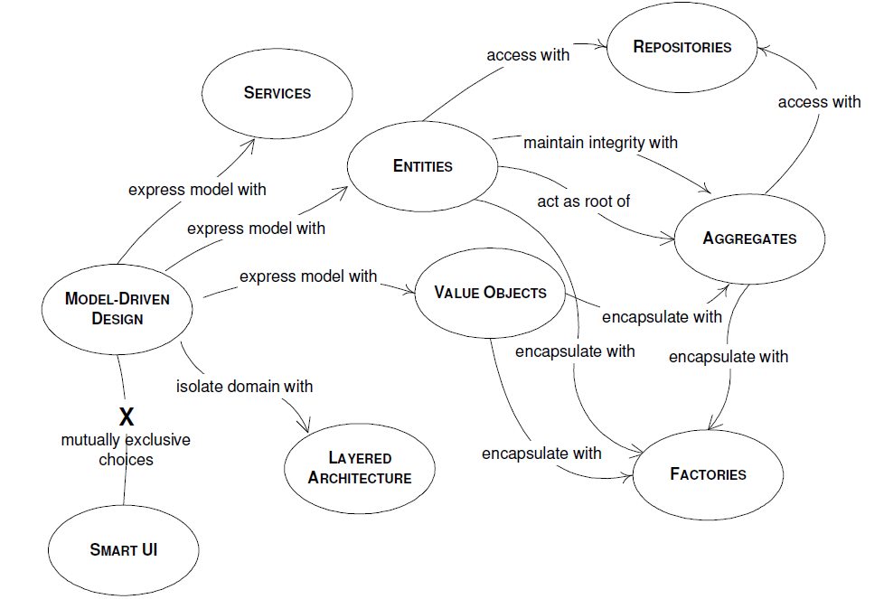

Padrão DDD
O Domínio-Driven Design (DDD) é uma abordagem de desenvolvimento de software que coloca um forte foco na modelagem do domínio de negócios. Existem vários conceitos fundamentais no DDD que são usados para criar modelos de domínio eficazes. Alguns dos conceitos mais usados são:

-
Domínio: O domínio se refere ao espaço de negócios ou área de conhecimento em que um aplicativo está operando. É o conjunto de regras, conceitos e processos que governam uma determinada área de negócios.
-
Entidades: As entidades são objetos de negócios com identidade própria que podem mudar ao longo do tempo. Elas são fundamentais para representar objetos do mundo real no sistema.
-
Objetos de Valor: Objetos de valor são objetos que não têm identidade própria, mas representam um conceito importante no domínio. Eles são imutáveis e são usados para encapsular valores que não mudam.
-
Agregados: Agregados são grupos de entidades e objetos de valor relacionados que são tratados como uma única unidade transacional. Eles fornecem limites claros para as operações no domínio e garantem a consistência dos dados.
-
Repositórios: Os repositórios são responsáveis por armazenar e recuperar entidades. Eles permitem o acesso aos objetos do domínio sem a necessidade de conhecer os detalhes de armazenamento, como o banco de dados subjacente.
-
Serviços de Domínio: Serviços de domínio encapsulam a lógica de negócios que não pertence naturalmente a uma entidade ou objeto de valor. Eles são usados para implementar operações de alto nível que envolvem várias entidades ou agregados.
-
Eventos de Domínio: Eventos de domínio são eventos que representam mudanças no estado do sistema. Eles são usados para notificar outras partes do sistema sobre alterações no domínio.
-
Bounded Contexts: Bounded Contexts são limites lógicos no sistema onde o vocabulário e o modelo de domínio são consistentes e bem definidos. Diferentes partes do sistema podem ter diferentes bounded contexts.
-
Context Mapping: O Context Mapping é o processo de definir e gerenciar interações entre bounded contexts, especialmente em sistemas maiores e mais complexos. Isso envolve lidar com a tradução de conceitos entre contextos e estabelecer acordos de comunicação.
-
Factory (Fábrica): As fábricas são usadas para criar objetos complexos, como agregados, com um processo de criação controlado. Isso ajuda a garantir a consistência do estado dos objetos.
-
Serviços de Aplicação: Os serviços de aplicação são responsáveis por coordenar a interação entre a interface do usuário e o domínio, traduzindo comandos e consultas da interface do usuário em ações no domínio.
Tipos de Modelagens no DDD
-
Modelagem Estratégica: Esta camada lida com questões de alto nível, como a visão geral do negócio, as conexões entre diferentes domínios e a organização de equipes de desenvolvimento. Nessa camada, são definidos conceitos como Bounded Contexts, que representam limites bem definidos onde um modelo específico é aplicado.
-
Modelagem Tática: A Modelagem Tática é o foco desta pergunta. Ela se concentra na tradução dos conceitos estratégicos do domínio em código concreto. Isso envolve a criação de modelos ricos em conceitos (também chamados de Entidades e Objetos de Valor) que representam os elementos fundamentais do domínio e a definição de Agregados que encapsulam um conjunto de entidades e objetos de valor. Além disso, a Modelagem Tática envolve a definição de Repositórios para acessar esses objetos e a especificação de Serviços de Domínio para implementar regras de negócios complexas.
-
Modelagem de Aplicação: A terceira camada lida com a interação do software com o mundo exterior. Aqui, você define os casos de uso, interfaces de usuário, adaptadores, controladores e outros elementos que permitem que o software interaja com os usuários, outros sistemas e recursos externos.
Modelagem Estratégica
A Modelagem Estratégica no Domain-Driven Design (DDD) é a camada mais alta da modelagem e se concentra na compreensão do contexto do domínio e na organização de equipes e limites estratégicos. Os princípios da Modelagem Estratégica visam fornecer uma visão geral clara e estruturada do domínio de negócios e são essenciais para alinhar o desenvolvimento de software com as necessidades do negócio. Aqui estão alguns dos princípios-chave da Modelagem Estratégica no DDD:
-
Bounded Contexts (Contextos Delimitados): Identifique e defina os limites de contexto delimitado, que são áreas bem definidas do domínio em que um modelo específico é aplicado. Cada contexto delimitado tem seu próprio modelo de domínio e linguagem ubíqua. Isso ajuda a evitar conflitos de terminologia e conceitos entre diferentes partes do sistema.
-
Linguagem Ubíqua: Desenvolva uma linguagem compartilhada entre especialistas em domínio e desenvolvedores. A linguagem ubíqua é usada para descrever o domínio de forma clara e unificada, garantindo que todos tenham uma compreensão comum.
-
Context Map (Mapa de Contexto): Crie um mapa de contexto que represente visualmente os relacionamentos e as interações entre os contextos delimitados. Isso ajuda a entender como os diferentes modelos de domínio se encaixam e colaboram.
-
Compartilhamento de Conhecimento: Promova a colaboração e o compartilhamento de conhecimento entre especialistas em domínio, desenvolvedores e outros stakeholders. Isso ajuda a garantir uma compreensão mais profunda e precisa do domínio.
-
Limites Explícitos: Defina os limites de contexto de forma explícita e documente as expectativas e os contratos entre diferentes contextos. Isso ajuda a evitar mal-entendidos e conflitos quando os limites são cruzados.
-
Anticorrupção Layer (Camada de Anticorrupção): Quando você precisa integrar contextos delimitados que têm modelos de domínio conflitantes, use uma camada de anticorrupção para traduzir e adaptar as informações entre eles, garantindo que a integridade do seu modelo de domínio seja mantida.
-
Equipes Autônomas: Organize as equipes de desenvolvimento em torno dos limites de contexto delimitado, permitindo que cada equipe seja responsável por seu próprio modelo de domínio. Isso ajuda a melhorar a autonomia e a eficiência das equipes.
-
Padrões Estratégicos: Identifique e aplique padrões estratégicos que sejam relevantes para o domínio e para a organização. Isso inclui padrões para integração, segurança, escalabilidade e outros aspectos estratégicos do sistema.
-
Design para Mudança: Reconheça que o domínio e as necessidades do negócio podem evoluir ao longo do tempo. Projete sistemas que sejam flexíveis e adaptáveis para acomodar mudanças futuras.
-
Visão Global do Negócio: Mantenha uma visão global do negócio e do ecossistema em que o software está inserido. Isso ajuda a garantir que as decisões de design sejam alinhadas com os objetivos estratégicos da organização.
Modelagem Tática
A Modelagem Tática no Domain-Driven Design (DDD) é orientada por um conjunto de princípios que ajudam a guiar a construção de modelos de domínio eficazes e ricos em conceitos. Esses princípios são essenciais para criar uma representação precisa e funcional do domínio de negócios em seu software. Aqui estão alguns dos princípios-chave da Modelagem Tática no DDD:
-
Entidades: As entidades representam objetos que têm identidade e podem mudar ao longo do tempo. Elas são caracterizadas por um identificador único e podem ter atributos e métodos. As entidades desempenham um papel central na Modelagem Tática e ajudam a representar objetos do mundo real no domínio.
-
Objetos de Valor: Objetos de Valor são imutáveis e representam conceitos que não têm identidade própria, mas são fundamentais para o domínio. Eles são usados para modelar características e propriedades que não mudam individualmente, mas que são importantes para o domínio.
-
Agregados: Os Agregados são grupos de entidades e objetos de valor relacionados que são tratados como uma única unidade. Eles têm uma raiz, que é uma entidade que atua como ponto de entrada para o acesso ao restante do agregado. Agregados ajudam a garantir a consistência e a integridade dos dados dentro de um conjunto relacionado de objetos.
-
Repositórios: Repositórios são interfaces ou classes que fornecem métodos para acessar e persistir entidades dentro de um Agregado. Eles permitem isolar o código de domínio da infraestrutura de armazenamento de dados, facilitando a substituição de diferentes fontes de dados sem afetar o domínio.
-
Serviços de Domínio: Serviços de Domínio são usados para encapsular a lógica de negócios que não pertence naturalmente a uma entidade ou objeto de valor específico. Eles fornecem operações que afetam vários objetos no domínio e são úteis para implementar regras de negócios complexas.
-
Foco na Linguagem Ubíqua: A linguagem usada na Modelagem Tática deve ser consistente com a linguagem usada pelos especialistas no domínio. Isso ajuda a garantir que a comunicação entre desenvolvedores e especialistas seja eficaz e que o software reflita com precisão o conhecimento do domínio.
-
Limite o Acoplamento: É importante manter o baixo acoplamento entre os diversos componentes do sistema. Agregados, repositórios e serviços de domínio devem ser projetados para limitar as dependências entre eles, facilitando a manutenção e a evolução do sistema.
-
Separação de Responsabilidades: A Modelagem Tática segue o princípio de separação de responsabilidades, onde diferentes componentes do sistema têm funções bem definidas e limitadas. Entidades, objetos de valor, Agregados e Serviços de Domínio desempenham papéis distintos no sistema.
Modelagem de Aplicação
Na abordagem de Domain-Driven Design (DDD), a Modelagem de Aplicação é uma camada responsável pela interação entre o domínio do problema (modelagem tática) e o mundo exterior, como interfaces de usuário, sistemas externos e adaptadores. Embora os princípios da Modelagem Tática estejam mais relacionados à representação do domínio de negócios, a Modelagem de Aplicação lida com a orquestração e a coordenação de casos de uso e interações com atores externos. Aqui estão alguns princípios-chave da Modelagem de Aplicação no DDD:
-
Casos de Uso Claros: Defina e identifique claramente os casos de uso da aplicação. Isso envolve a compreensão dos fluxos de trabalho do usuário e dos requisitos funcionais do sistema. Os casos de uso devem ser bem definidos e mapeados para as operações do domínio.
-
Interfaces de Usuário Efetivas: Desenvolva interfaces de usuário que sejam eficazes para os usuários finais. As interfaces devem refletir a linguagem ubíqua do domínio e fornecer uma experiência de usuário intuitiva.
-
Controladores de Aplicação: Use controladores de aplicação para orquestrar a execução dos casos de uso. Os controladores de aplicação são responsáveis por receber solicitações dos usuários, chamar os serviços de domínio apropriados e coordenar a resposta para as interfaces de usuário.
-
Adaptadores: Use adaptadores para interagir com sistemas externos e recursos, como bancos de dados, serviços web, dispositivos de hardware, etc. Os adaptadores ajudam a isolar a lógica de aplicação do código de infraestrutura.
-
Modelo de Aplicação: O modelo de aplicação é uma representação simplificada do domínio que é usada para atender às necessidades das interfaces de usuário. Ele pode ser composto por DTOs (Objetos de Transferência de Dados) e objetos de apresentação que são otimizados para a exibição e entrada de dados.
-
Caso de Uso Único: Em muitos casos, cada controlador de aplicação deve corresponder a um único caso de uso. Isso ajuda a manter a coesão e a clareza no código de aplicação.
-
Injeção de Dependência: Use técnicas de injeção de dependência para gerenciar as dependências entre os componentes da aplicação. Isso ajuda a tornar o código mais testável e flexível.
-
Testes de Unidade e Integração: Desenvolva testes de unidade para verificar a lógica da aplicação e testes de integração para verificar a interação com os componentes externos.
-
Evitar a Lógica de Domínio na Camada de Aplicação: Evite colocar regras de negócios complexas na camada de aplicação. Em vez disso, coloque essas regras na camada de modelagem tática, nos serviços de domínio apropriados.
-
Linguagem Ubíqua na Interface de Usuário: Mantenha a consistência da linguagem ubíqua na interface de usuário para garantir uma compreensão clara e eficaz do sistema pelos usuários.
Camadas do DDD
Embora o DDD não defina um conjunto rígido de camadas, geralmente é implementado com as seguintes camadas:
-
Camada de Domínio (Domain Layer): Esta é a camada central do DDD e contém as regras de negócios e a lógica do domínio. É onde as entidades, agregados, objetos de valor e serviços do domínio são definidos. Esta camada é a mais crítica no DDD, pois se concentra em capturar o conhecimento do domínio e expressar as regras de negócios de forma clara e encapsulada.
-
Camada de Aplicação (Application Layer): A camada de aplicação atua como uma camada intermediária que coordena a interação entre a camada de domínio e a camada de infraestrutura. Ela contém os serviços de aplicação que orquestram as operações do domínio, incluindo a validação de regras de negócios e a coordenação das operações de diferentes agregados. Essa camada é muitas vezes responsável pela tradução de solicitações da interface do usuário em comandos para o domínio.
-
Camada de Infraestrutura (Infrastructure Layer): A camada de infraestrutura lida com preocupações técnicas e detalhes de implementação, como o acesso a bancos de dados, serviços de terceiros, notificações, e assim por diante. Ela fornece uma base técnica para o aplicativo, permitindo que a camada de domínio permaneça desacoplada de detalhes de implementação. A camada de infraestrutura geralmente inclui componentes como repositórios, adaptadores de banco de dados, serviços de mensageria, serviços de autenticação, entre outros.
-
Camada de Interface do Usuário (User Interface Layer): Essa camada é responsável por interagir com os usuários finais ou outros sistemas. Ela pode incluir interfaces web, aplicativos móveis, APIs REST, ou qualquer outra forma de interação com o aplicativo. É importante que a camada de interface do usuário separe adequadamente as preocupações de apresentação das regras de negócios e coordenação.
Exemplo usando linguagem Ubíqua do DDD
Entidade: Pedido
-
Pedido: Um Pedido representa um registro das escolhas do cliente em relação aos produtos que deseja comprar.
-
Cliente: O Cliente é a pessoa que faz um Pedido. Ele tem informações como nome, endereço, e-mail, etc.
-
Produto: Um Produto é um item disponível para compra no sistema de comércio eletrônico.
-
Carrinho de Compras: O Carrinho de Compras é onde os Clientes adicionam os Produtos que desejam comprar antes de fazer o Pedido. Pode conter vários Produtos e quantidades.
-
Status do Pedido: O Status do Pedido é o estado atual do Pedido e pode ser “Em processamento,” “Enviado,” “Entregue,” etc.
-
Itens do Pedido: Itens do Pedido representam os Produtos específicos e as quantidades incluídas em um Pedido. Cada Item do Pedido está associado a um Produto.
-
Endereço de Entrega: O Endereço de Entrega é o local para onde o Pedido será enviado, fornecido pelo Cliente.
-
Pagamento: O Pagamento é a transação financeira que ocorre quando o Cliente confirma o Pedido. Pode incluir informações de pagamento, como número do cartão de crédito, data de validade, etc.
-
Estoque: O Estoque é a quantidade disponível de cada Produto no sistema. Quando um Pedido é feito, o Estoque é atualizado.